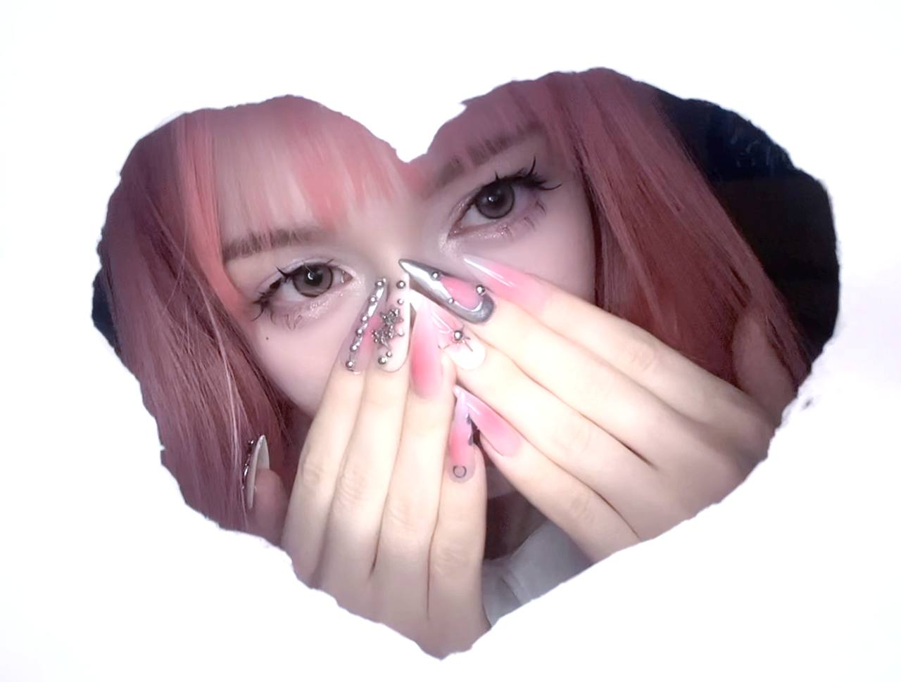

Astagme
Multidisciplinary designer dedicated to bringing your unique vision to life. I specialize in full-cycle design, taking your ideas from a blank canvas to a complete brand identity. Whether you’re starting with a clear goal or just a feeling, I help define your unique color palette, typography, and style. From logos to full-scale websites, I transform abstract concepts into stunning visual realities — no matter the aesthetic.